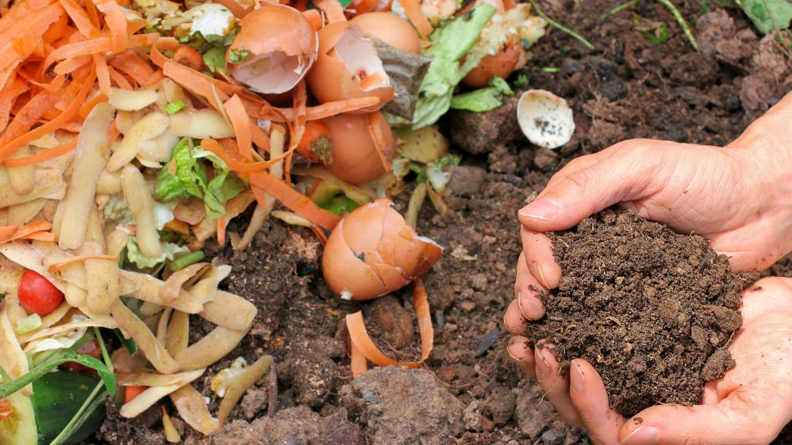
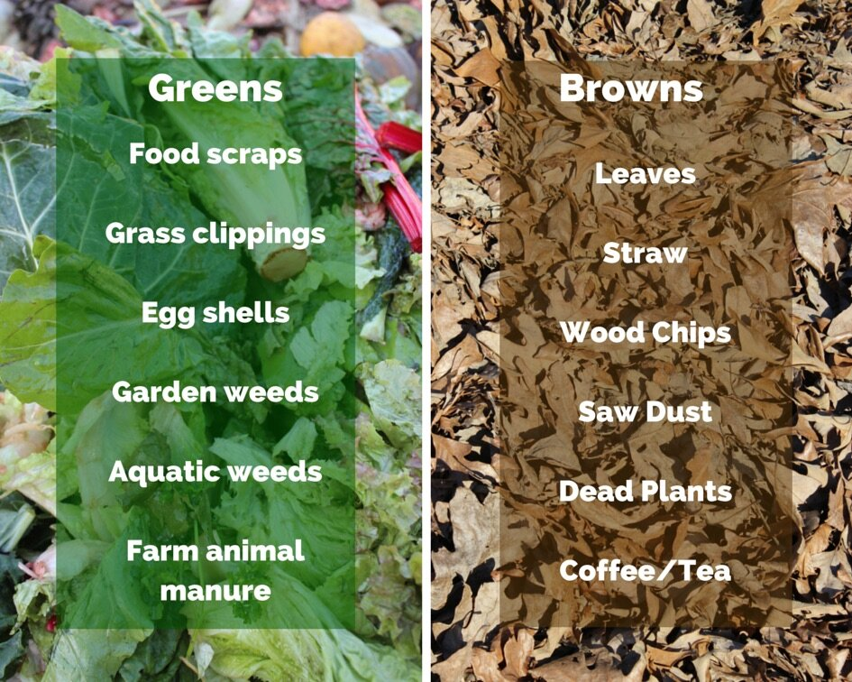

Grenergy Editorial Research
Published November 1, 2023
Compost truly exemplifies the epitome of the saying "One man's trash is another man's treasure".
The foods we eat sometimes come with natural peels and while we may love how the orange pulp tastes, the same can’t be said for its peel. Oftentimes, we throw the peels of such fruits such as oranges and bananas, seeing it as mere trash. Yet, these peels are important to microorganisms who rely on such “trash” to be able to grow and reproduce. In order for these organisms to be able to digest these scraps though, they first need to be composted.
Composting is an aerobic process in which organic materials are converted into nutrient-rich soil amendment through natural processes. The product, compost, sometimes known as mulch, is typically added to the soil in order to build healthier soil and improve plant growth. While there are a variety of ways to compost at home, ranging from backyard composting to vermicomposting, it’s important to remember what can and can’t be put in your DIY-fertilizer.
Because the bacteria that break down the organic material need both nitrogen and carbon, it's crucial to make sure you add a combination of the "greens" and "browns." Greens are materials that are high in nitrogen and usually damp, giving the bacteria that cause decomposition vital nutrients. The high nitrogen content of "greens" must be counterbalanced by browns, which are frequently drier and a source of carbon.
To create the perfect environment for the diverse microbial population to flourish, it's extremely important to add a blend of "greens" and "browns" to your compost pile. The microorganisms convert these materials into humus, a beneficial soil amendment, using the carbon and nitrogen as energy sources for their metabolic processes. The ratios of the greens to browns are also important. Maintaining the right ratio of "greens" to "browns" speeds up the composting process and helps avoid problems like foul odors, too much moisture, or sluggish decomposition rates. Furthermore, keeping this equilibrium produces high-quality compost that improves soil fertility, encourages plant development, and elevates the general health of the soil in your landscape or garden.